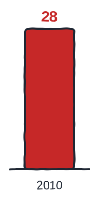
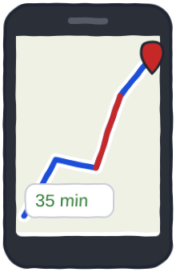
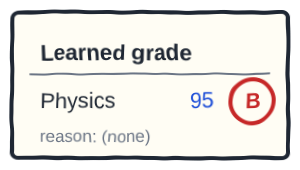

Prefer to watch? This post goes with the video (10:40). Open it on YouTube, where you can also leave a comment.
Software already runs everything
Your phone, your car and your bank all run on software. Behind each of them sit millions of lines of code, and a person wrote every rule in them. The machine simply follows those rules.
So a student asked me a fair question: if code can already run all of this, why do we need AI at all? Let's try to understand, starting with a small puzzle about two jobs for a computer.
Job A
Given a student's marks, give the grade.
Job B
Look at a photo, and say whether your friend is in it.
Job A: you write the rules
Say your college gives grades by a simple rule. 90 and above is an A, 75 and above is a B, and anything lower is a C. These are rules, and you can write every one of them down. So the program is easy.
The goal: see that written rules give the same answer every time.
The steps: press Run. Then, on the line marked # edit here, change 82 to 95 and run again. Last, try 60.
Guess first: which grade will 75 get, exactly on the line?
What it means: the same marks always give the same grade. That is the strength of this kind of code: it is exact. And if someone asks why they got a B, you can show them the line that decided it.
A person writes the rules, and the computer follows them. This is what we call traditional programming.
Job B: the wall
Now job B. Say you are scrolling through the group photos from a college trip. Within a second you spot your friend, whether he is seen from the side, wearing a cap, or caught in a dark, blurry shot.
Let's try to write the rules anyway, one at a time.
| Your rule | Why it fails |
|---|---|
| Two eyes, a nose and a mouth | Everyone in the photo has those. |
| Short hair | Half the boys in your class have it too. |
| A beard | He shaved last week. |
| Glasses | He took them off for the photo. |
It gets worse when you keep all four rules anyway. One day his cousin appears in a photo, with the same hair, beard and glasses, and your program says it is your friend.
Faces are not special. Understanding what you say to your phone, reading messy handwriting and spotting a spam message all hit the same wall.
This really happened. In 1979, a company called DEC built a program to check its customers' computer orders. It started with 250 hand-written rules and grew to about 3,300 by 1983. Its own builders wrote: "It is difficult now to believe R1 will ever be done." (R1 Revisited, AI Magazine, 1984)
How you really learned it
So here is a different question: how did you learn your friend's face in the first place?
Nobody gave you rules. You simply saw him many times, in class, in the canteen and on the trip, and each time you knew it was him. Slowly, your brain worked out the pattern on its own.
What if we do the same for a computer? Instead of rules, we give it thousands of photos, each with its answer: this is your friend, this is not. The computer then works out the rules by itself.
Learning the rules from examples, instead of being given them, is what we call machine learning. Most of what we call AI today is built on this idea.
The idea is older than you might think. In 1959, a researcher at IBM wrote a program that learned to play checkers, a board game a bit like a simpler chess. After 8 to 10 hours of practice, it played better than the person who wrote it.
Two ways to build it
Put side by side, the two approaches start from opposite ends.
Traditional coding
rules → logic → program → answers
Machine learning
data → training → model → deployment
In traditional coding, a person discovers the rules. The rules become logic, the logic goes into a program, and the program gives you the answers.
Machine learning starts from the data instead. The data goes through a training algorithm, a model comes out, and that model is put to work in a real app.
Finding the rules from data is called training, and what comes out is a model. A model is sometimes a set of rules the computer found, but most often it is just numbers that no human wrote. Putting the model to work is called deployment.
Does it really work?
Look at one famous yearly challenge, called ImageNet. Teams from around the world sent in programs that look at a photo and name what is in it. These were not faces but things: dogs, cars, mushrooms and a thousand other kinds. Each program got five guesses per photo.

In 2010, the best program still got about 28 out of every 100 wrong. As the models learned better, the errors fell. By 2015, the best one got fewer than 4 wrong, while one careful human who tried the same challenge got about 5 wrong.
Nobody wrote the rules for a thousand kinds of things; the programs learned them. Today this is everywhere: in one large report, 88 out of every 100 organisations surveyed said they use AI.
Certain, or predicted?
Notice that even the best program still got some photos wrong. That is not a bug. It is how AI answers.
Traditional code is certain
Same input, same output, every single time.
AI predicts
It gives you its best guess, with how sure it is.
You already live with predictions. Say the weather report gives a 60% chance of rain. You carry an umbrella, and sometimes it doesn't rain, yet nobody calls the report broken. It told you how sure it was.
Or say Google Maps tells you the trip takes 35 minutes. You reach in 34 or 36, or later if the traffic catches up. That estimate is a prediction, and Google makes it with machine learning.

Certain does not mean correct. If a written rule is wrong, the code is wrong every single time.
So, AI for everything?
No. Go back to job A, the grades. Would you show a machine thousands of mark sheets so it can learn a rule you can write in 3 lines?
The machine would get most grades right. But one day it gives a B to someone with 95, and it cannot tell you why.

Learning has a cost. It needs many examples, it is sometimes wrong, and it cannot always explain itself. Code with written rules has none of these costs.
So when you can write the rules, write them, and use learning only where you cannot. A well-known engineering guide from Google puts this as its rule number 1: "Don't be afraid to launch a product without machine learning." That is fit-for-purpose thinking, not trend-first thinking.
Most real systems use both
Say you pay a friend from your bank app. The money leaving your account follows exact rules, because not one rupee can go missing. That part is code.
Now say a payment looks unusual: a big amount, at midnight, to a stranger. Your bank may stop it, or message you to check whether it is fraud. Nobody can write all the rules for that, so that part is AI. It learns from past frauds and predicts.
In India, the Reserve Bank has even built an AI model, MuleHunter.AI, to help banks catch accounts used for fraud. It is the same app, with code for the certain part and AI for the guess.
The takeaway
- AI did not come because traditional coding was bad. Some problems were never programming problems; they were learning problems.
- When we know the rules, we program them. When we only have examples, we learn them.
- Most real systems use both: code for what must be certain, AI for what can only be predicted.
That opens a new question. If the machine learns from our examples, who picks the examples, and who checks what it learned?
Go and meet the wall yourself
The goal: write spam rules by hand, and feel where they break.
The steps: below are 10 real-looking messages, each marked spam or not. Add your rules where the code says # edit here, then press Run. The program lists every message your rules got wrong.
Guess first: how many will the one starting rule get wrong?
What you should see: with only rule 1, it gets 3 of 10 wrong. Press Check when you reach 0. Then imagine 1,000 new messages tomorrow, written by people trying to get past your rules. If your rules break, that is good: you just met the wall yourself.
One question for you: name one job from your day where you could write the rules, and one where you never could. Tell me under the video.
References
Every number on this page, and where it comes from. Checked on 9 Oct 2026.
- ImageNet Large Scale Visual Recognition Challenge — ILSVRC 2010 results. The 2010 winner's score: about 28 wrong in 100 (top-5 error 28.2%). link
- He, K., Zhang, X., Ren, S., Sun, J. — Deep Residual Learning for Image Recognition (2015). The 2015 winner: 3.57% error, fewer than 4 in 100. link
- Karpathy, A. — What I learned from competing against a ConvNet on ImageNet (2014). One careful human: 5.1% error. One trained annotator, not 'all humans'. link
- McDermott, J. — R1: The Formative Years, AI Magazine. What DEC's rule-based program did: configure customers' computer orders. link
- Bachant, J. & McDermott, J. — R1 Revisited: Four Years in the Trenches, AI Magazine 5(3), 1984. 250 rules in 1979, about 3,300 by 1983, and 'difficult now to believe R1 will ever be done'. link
- Samuel, A. L. — Some Studies in Machine Learning Using the Game of Checkers, IBM Journal, 1959. The checkers program that learned by playing and beat its own author.
- Stanford HAI — AI Index 2026, Economy chapter. 88% of surveyed organisations used AI in 2025. link
- Google DeepMind — Traffic prediction with advanced Graph Neural Networks (2020). Google Maps' arrival times are predicted with machine learning. link
- Reserve Bank of India — Statement on Developmental and Regulatory Policies, 6 Dec 2024. MuleHunter.AI, an AI/ML model that helps banks catch accounts used for fraud. link
- Zinkevich, M. — Rules of Machine Learning, Google for Developers. Rule #1: 'Don't be afraid to launch a product without machine learning.' link
- Chollet, F. — Deep Learning with Python, chapter 1. The well-known picture: rules + data → answers, against data + answers → rules. link
- Graham, P. — A Plan for Spam (2002). For your homework: six months of hand-written spam rules, then a filter that learns. link